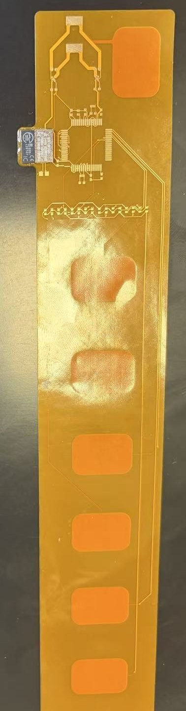
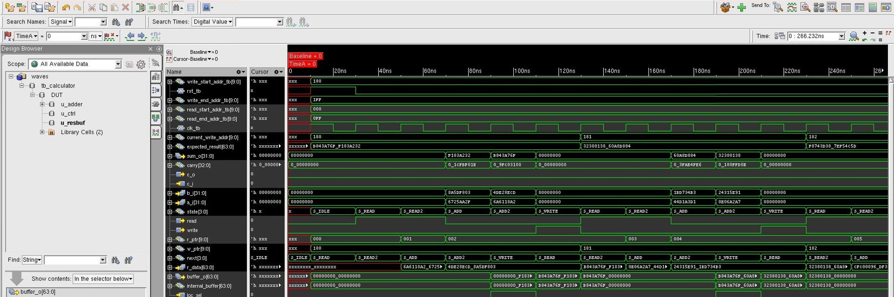
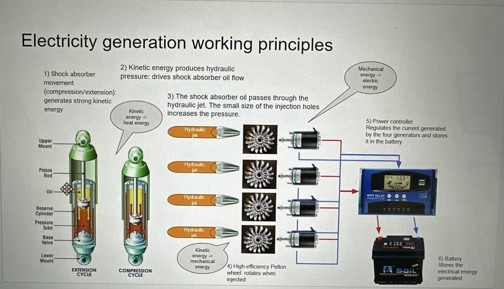
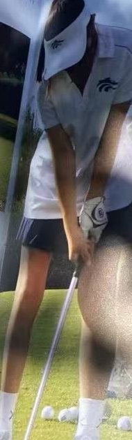

Joyce (Jiusi) Wang
Electrical Engineering, Georgia Tech. Chip design, PCB design and hardware.
I'm a third-year EE student. I do ASIC physical design with Silicon Jackets, from RTL to layout, and hands-on hardware like a wearable EMG flex PCB. Below are my main projects and experience, with photos and screenshots from the actual work.
GPA 4.0 / 4.0 · Junior · Graduating May 2028 · SAT 1540 · U.S. Permanent Resident
joycewang1911@gmail.com (949) 418-2613 LinkedIn GitHub
Projects
Wearable EMG Flex PCB

A 2-layer flexible PCB that sits on the skin, reads muscle signals (EMG) through six electrode pads and streams them over Bluetooth. EMG is tens of microvolts to a few millivolts, so most of the design is about keeping noise out. I co-designed the schematic and flex layout in Altium with the EMG subteam lead.
- Three differential input pairs, so noise both pads pick up (like 60 Hz from the body) cancels
- TI ADS1298 front end with programmable gain and 24-bit delta-sigma ADCs
- Separate 3.0 V LDOs for the analog and digital supplies, and an nRF5340 BLE module over SPI
- Hand-assembled and reworked 3 prototypes under a stereo microscope, including BGA reflow with hot air, and wrote an assembly guide for the team
- Traced a clock-select pin tied the wrong way back to the datasheet and fixed it with a jumper wire


RISC-V (RV32I) Single-Core CPU
A small RISC-V CPU I'm designing, verifying and taking to layout. It runs a subset of RV32I (addi, add, sub, lw, sw, beq, sll, srl, ebreak) at 3 cycles per instruction: fetch, decode, execute.
- Fetch, decode and execute logic plus the control that steps through them
- Connecting the core to the SRAM and memory controller interfaces
- Testing each instruction in simulation, then running the RTL-to-GDS flow on the core
64-Bit Calculator ASIC
The chip reads pairs of 64-bit numbers from SRAM, adds them with a 32-bit ripple-carry adder in two passes, and writes the result back, controlled by a 7-state FSM. I took it from RTL to a routed layout.
- Built a UVM-style testbench (driver, monitor, scoreboard) that checks every result, plus SystemVerilog assertions for carry propagation, write order and reset. 99.82% functional coverage, 100% FSM and toggle coverage, 7 of 7 assertions passing
- Cut DRC violations from 1,000+ to 0 in Innovus by reading the SRAM LEF obstructions, adding placement halos, adding MET1 to MET3 routing blockages and opening more routing layers
- Closed setup timing from −2.709 ns to +0.01 ns WNS and hold from −0.032 ns to 0
- Wrote a Python timing-report parser (50 failing paths, average depth about 6) and Tcl procs to highlight SRAMs and critical paths



Renewable Energy Air Suspension System
Shock absorbers turn a car's bouncing into heat. I designed a suspension that recovers some of that energy as electricity for an EV: a hydraulic bypass with check valves spins a vane motor in one direction whether the shock compresses or extends, and the motor drives a generator that charges the battery.
- Estimated about 6.8% more EV range from my calculations and simulations
- Wrote a 35-page research paper; 2nd place at the 2024 Iowa State Science Fair, plus awards from Yale SEA, NOAA, ONR and Iowa State University
- Built a Bluetooth app to monitor and control the system in real time; the app interface is copyrighted


Experience
ASIC Physical Design Engineer, Silicon Jackets
Georgia Tech's chip design team. I run RTL-to-GDS flows in Cadence Innovus, close timing, fix DRCs, and script the flow in Python and Tcl.
Research Assistant, GAMMA Research Group, Georgia Tech
Built a MATLAB surrogate optimization pipeline for OTA sizing that matched brute-force search with 5x fewer circuit evaluations (500 vs. 2,511) and about 8x less runtime (3 vs. 25 min). Found and flagged a figure-of-merit bug that pushed the optimizer toward physically invalid designs.
Student Researcher, Mechatronics & Motivation Lab, Georgia Tech
Co-designed the wearable EMG flex PCB with the EMG subteam lead, then assembled, reworked and debugged three prototypes.
R&D Intern Engineer, Shanghai ZhiCheng Software Co.
Wrote embedded control software that reads 5 live vehicle inputs and drives an air pump to hold chassis height within ±5 mm across 4 driving conditions. Built a Bluetooth diagnostics app; the software is copyrighted.
Technical Lead, NASA Student Launch
Led payload design, integration and flight-readiness testing for a dual-deployment high-power rocket that flew to about 1 mile; qualified out of 1,000+ teams. The payload used a Teensy 4.1 with an IMU and barometer to drive servo canards toward a target altitude. Wrote a failure mode analysis and a two-person arming procedure for NASA design reviews.


Awards
Research and science fairs
- Genius Olympiad International Finalist and Honorable Mention, $14,000 scholarship
- Most Outstanding Exhibit in STEM, Yale Science & Engineering Association
- Iowa State Science Fair, 2nd place, Energy & Transportation
- Iowa State University College of Engineering $1,000 scholarship
- Bosch Motorsport "High Tech for High Speed" Special Award
- ISU Excellence in Environmental Health & Safety Award
- NOAA 2024 Taking the Pulse of the Planet Award
- Naval Science Award, Office of Naval Research
- EISEF Regional Finalist, Class 1 Award, and Exceptional Genius Award
- Local science fair, 3rd place, Senior Physical
Academic and other
- IEEE Eta Kappa Nu (HKN) member
- Salutatorian
- Presidential Scholar Nominee
- National Honor Society
- FBLA State, 2nd in UX Design, 3rd in Visual Design
- Southern California PGA 2022 Individuals Players' Tour, Runner-Up
Outside engineering
Golf and tennis
About 10 years of golf. I played varsity all through high school and played international junior tours: 1st at District (CA), runner-up at Regionals (CA), 4th at State (FL), and runner-up on the 2022 SoCal PGA Players' Tour. I also played varsity tennis as the #2 seed.


Guzheng 古筝
A 21-string Chinese zither, tuned by sliding a bridge under each string and played with picks taped to the fingers. I earned the Central Conservatory of Music Level 8 certificate (out of 9) and performed with the California Youth Chinese Symphony.
Community
- canCode. Taught weekly Scratch coding classes to about 30 kids in underserved communities
- LingoX. Wrote a year-long ESL curriculum that the University of Alabama at Birmingham adopted for international students
- Sierra Club. Student board representative; started sustainability projects at my school